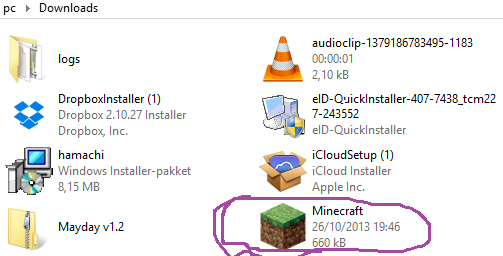
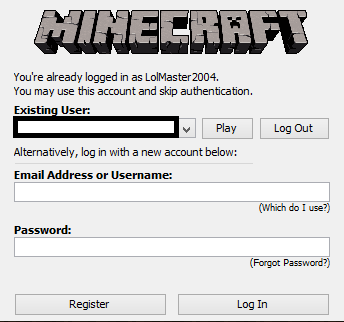
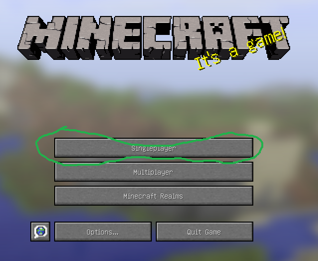
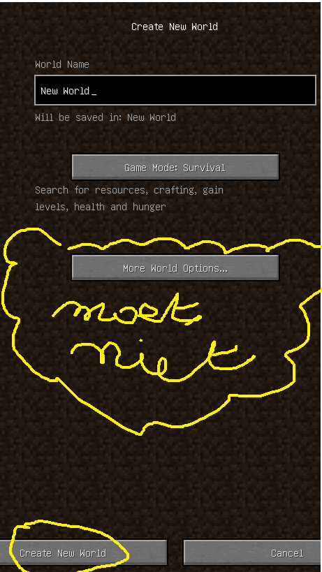
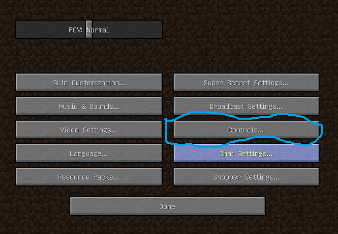

Ga naar dowloads op je computer. Zoek minecraft en klik er op.(download java)

Als je het opstart moet je op uitvoeren drukken. Dan komer is allemaal rare cijfers en letters.
Druk dan de gegevens in.(best je e-mail adres invoeren)

Druk dan op play. Laden....... Dan druk je op Singleplayer.

Druk op create world. Pas de naam aan. Creative of survival(hardcore moeilijk).
Misschien cheats aan zetten en/of bonuskist. Druk dan weer op create world.

Dan begin je te spelen. Druk op options naar controls.
Pas de dingen aan die je wilt. Je kan aan alles in de opties wat prutsen.
Niet de "Super Secrets Settings" die zijn gevaarlijk.
